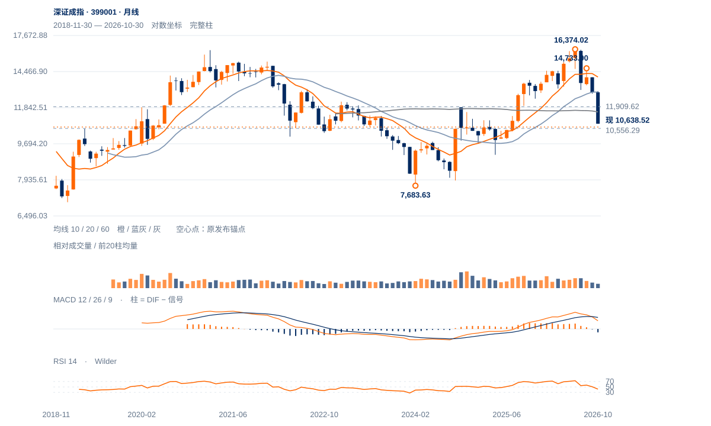

弱反抽未收旧谷
未来1—5个交易日倾向破位后的弱反抽，10810—11003是主要角色转换区；低量上涨只有配合越界保持，才能从技术性回补升为修复。
未来1—5个交易日倾向破位后的弱反抽，10810—11003是主要角色转换区；低量上涨只有配合越界保持，才能从技术性回补升为修复。
未来2—6周以“弱反抽未收旧谷”为基准。旧谷附近反弹若不能越过较低高区，中期下降结构继续约束反抽空间。先收回10810—11003；11198—11320及11613原两日、11639中峰条件分别保留。10810原失效于17日已触发；18日未修复。日收低于10515会增加下行扩展风险，不能把新低改作原守底线。
未来1—3个月属于2024—2026大升波的深调整重建，11003比例及11568完整60月均衡均在上方。周收重夺12029半幅位置且形成较高谷才明显改善；远端9119只作历史风险参照，没有直接到价的可靠测幅。

展开图表 ↗2021与2026在16300附近形成同高区，但长期双顶仍未下破2024大谷。2024—2026升波61.8%回撤11003现已在上方，长期突破恢复不足。完整10月20月均衡12,920.61；本月价格变化尚未成为已完成月线确认。
已完成周线的主要锚点：2026-07-30低13,068.56；2026-08-18高14,733.90；2026-09-22高13,914.21。从这些同级峰谷观察，中期恢复尚需较高谷与越过反弹高点相继出现，单根下影或当日涨幅不能替代。本周仍未结束，18日表现只作进行中周的观察。
18日收10659.41，涨0.20%，最低10515.14，收盘回到当日区间约70%，但最高10722.67仍低于10810.42原谷。相对量0.81倍，属于跌破后的低量回收，尚未出现对旧支撑的收复。11月5日11613.40较低高区和11003长波61.8%参照仍压在上方。
2026-09-22高13,914.21（2026-09-30确认）；2026-11-03低10,810.42（2026-11-10确认）；2026-11-05高11,613.40（2026-11-12确认）
先收回10810—11003；11198—11320及11613原两日、11639中峰条件分别保留。
10810原失效于17日已触发；18日未修复。日收低于10515会增加下行扩展风险，不能把新低改作原守底线。
今天回收并收涨而量缩，卖方推进可能在减弱；若10810很快被收回，低量回试可以转为假下破解释。当前缺的是价格越界，不能只看RSI回升。
RSI14 32.33；ATR14 299.52；相对成交量0.81倍；ER20 0.248。
完整周线至11月13日，完整月线至10月30日；本周与11月尚未结束。指数价格不复权；长期历史按实际可得起点。